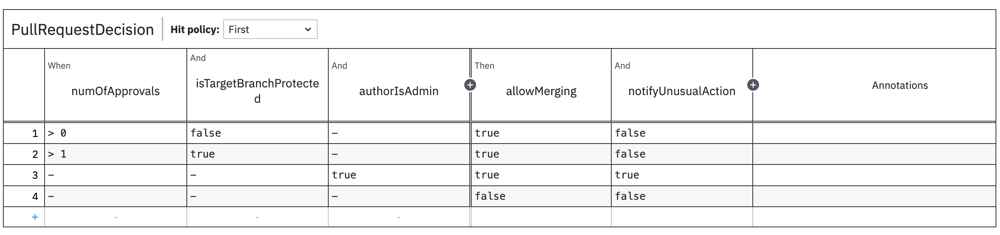
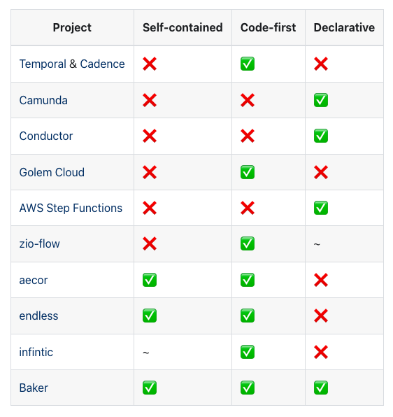
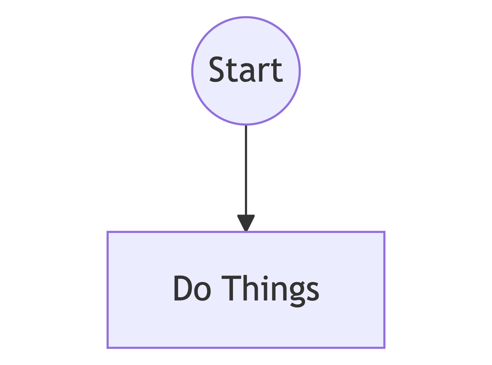
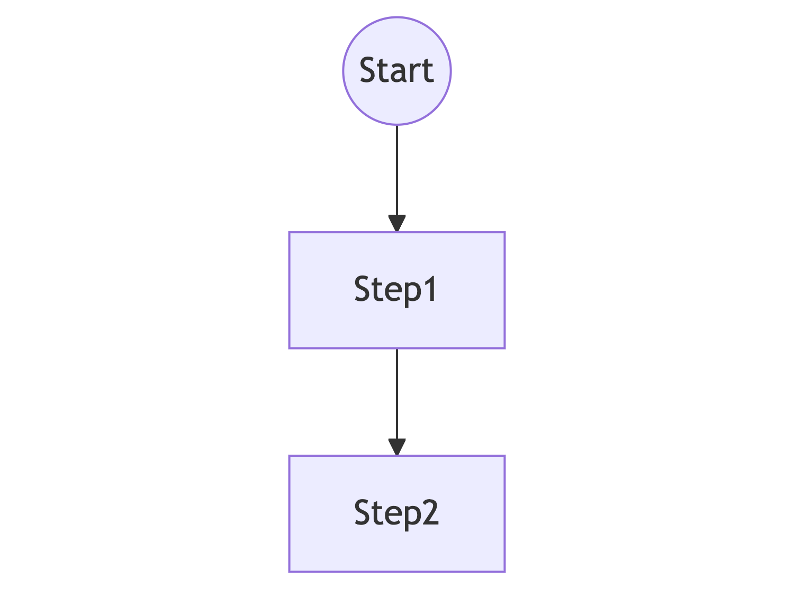
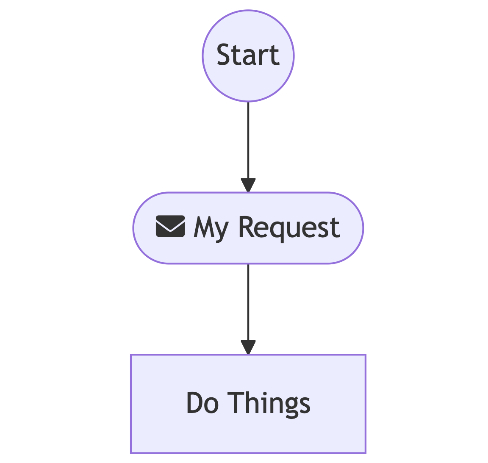
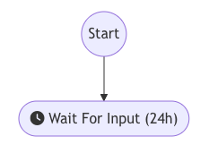
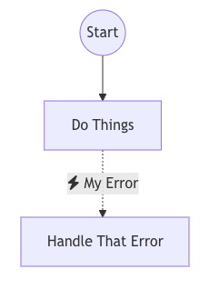
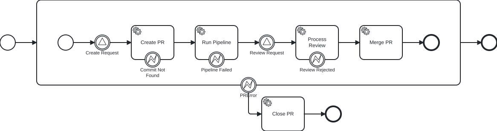
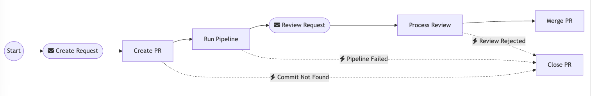

Decisions & Workflows
bringing your business closer
Voytek Pituła
----
### I'm not good at math
30min + 30 min = 45 min
Note your questions!
----
Decisions4s
### Familiar question
* How does the system work?
* Why this result?
* Is it correct?
Engineers vs. Business
notes:
- who was asked by non-engineers how the system works?
- who had to investigate why a particular if took a particular path?
- who had to get a greenlight from the business on the logic?
- who suffered due to disconnection between engineering and the business?
- who has even the slightest idea what higher-kinded data is?
++++
notes:
I built a library
using fancy feature called higher kinded data
and scala 3
I want to tell you about both of them
----
# Decisions4s
## THE what
notes:
you have heard the why
++++
Decisions4s » The What » Example
### Business logic
Pull request approval process
- Unprotected branch requires 1 approval
- Protected branch requires 2 approvals
- Admin can merge anything without approvals, but this
sends a notification
- Nothing can be merged otherwise
++++
### Business logic
```scala
val allowMerging =
if (numOfApprovals > 0) {
if (isTargetBranchProtected && (
numOfApprovals > 1 || isUserAdmin
)) true
else !isTargetBranchProtected
} else if (isUserAdmin) true
else false
val notifyUnusualAction = numOfApprovals == 0 && allowMerging
```
++++
### Defining decisions
* Input & Output
* Rules
* Hit Policy
++++
Decisions4s » The What » Example » Defining decisions
### Input & output
```scala
case class Input[F[_]](
numOfApprovals: F[Int],
isTargetBranchProtected: F[Boolean],
userIsAdmin: F[Boolean],
) derives HKD
case class Output[F[_]](
allowMerging: F[Boolean],
notifyUnusualAction: F[Boolean],
) derives HKD
```
++++
### Rule 1
Unprotected branch requires 1 approval
```scala [2|7|3|4|5|8|9]
val rule1 = Rule(
matching = Input(
numOfApprovals = it >= 1,
isTargetBranchProtected = it.isFalse,
userIsAdmin = it.catchAll,
),
output = Output(
allowMerging = true,
notifyUnusualAction = false
),
)
```
++++
### Rule 2
Protected branch requires 2 approvals
```scala [3,4,8]
val rule2 = Rule(
matching = Input(
numOfApprovals = it >= 2,
isTargetBranchProtected = it.isTrue,
userIsAdmin = it.catchAll,
),
output = Output(
allowMerging = true,
notifyUnusualAction = false
),
)
```
++++
### Rule 3
Admin can merge anything without approvals, but this sends a notification
```scala [5,9]
val rule3 = Rule(
matching = Input(
numOfApprovals = it.catchAll,
isTargetBranchProtected = it.catchAll,
userIsAdmin = it.isTrue,
),
output = Output(
allowMerging = true,
notifyUnusualAction = true
),
)
```
++++
### Rule 4
Nothing can be merged otherwise
```scala
val rule4 = Rule.default(
Output(
allowMerging = false,
notifyUnusualAction = false
)
)
```
++++
### Decision table
```scala [1|3|4|5]
val decisionTable: DecisionTable[Input, Output, HitPolicy.First] =
DecisionTable(
Seq(rule1, rule2, rule3, rule4),
"PullRequestDecision",
HitPolicy.First
)
```
++++
### Detour: `HitPolicy`
Strategy defining what to do with triggered rules outputs
* unique
* first
* combine
* count
++++
### Evaluate
```scala [1-7|8-11]
val result = decisionTable.evaluateFirst(
Input[Value](
numOfApprovals = 2,
isTargetBranchProtected = true,
authorIsAdmin = false,
),
)
result.output == Some(Output[Value](
allowMerging = true,
notifyUnusualAction = false
))
```
++++
### Diagnose
println(result.makeDiagnosticsString)
```text [1-3|4-7|8|10|13|17]
Evaluation diagnostics for "PullRequestDecision"
Hit policy: First
Result: Some(Output(true,false))
Input:
numOfApprovals: 2
isTargetBranchProtected: true
authorIsAdmin: false
Rule 0 [✗]:
numOfApprovals [✓]: > 0
isTargetBranchProtected [✗]: false
authorIsAdmin [✓]: -
== ✗
Rule 1 [✓]:
numOfApprovals [✓]: > 1
isTargetBranchProtected [✓]: true
authorIsAdmin [✓]: -
== Output(true,false)
```
++++
Decisions4s » The What » Example
### Visualize: markdown
```scala
val markdown = MarkdownRenderer.render(decisionTable)
```
```markdown
|(I) numOfApprovals|(I) isTargetBranchProtected|(I) authorIsAdmin|(O) allowMerging|(O) notifyUnusualAction|
|------------------|---------------------------|-----------------|----------------|-----------------------|
| > 0 | false | - | true | false |
| > 1 | true | - | true | false |
| - | - | true | true | true |
| - | - | - | false | false |
```
++++
### Visualize: DMN
```scala
val dmnXML = DmnRenderer.render(decisionTable).toXML
```

++++
### Bonus: effectful inputs
Run the IO only when needed
```scala
val result: IO[...] = decisionTable.evaluateFirst(
Input[IO](
userIsAdmin = fetchFromApi(),
...
)
```
++++
# Cool?
 ----
Decisions4s
# Decisions4s
## THE how
----
Decisions4s » The how
## Higher Kinded Data
----
Decisions4s
# Decisions4s
## THE how
----
Decisions4s » The how
## Higher Kinded Data
Fancy name for case classes with wrapped fields
case class Foo[F[_]](a: F[Int])
++++
Decisions4s » The how » Higher-Kinded Data
### Difference from tagless final?
trait Foo[F[_]]{
def a: F[Int]
}
Higher-kinded data is actually useful
++++
## How is it useful?
Preserve shape and store
- Rule conditions
- Rule output
- Decision input
- Decision output
- Rule condition result
- Metadata
++++
Decisions4s » The how » Higher-Kinded Data » How is it useful?
### Rule conditions
Check if rule is satisfied for given field (renderable)
Input[[t] =>> Expr[t => Boolean]]
++++
### Detour: `Expr`
```scala
trait Expr[T] {
def evaluate: T
def render: String
}
```
++++
### Rule conditions
```scala [1|3-4|5|7-11]
case class Input[F[_]](a: F[Int], b: F[String])
// [t] =>> Expr[t => Boolean]
type UnaryTest[T] = Expr[T => Boolean]
type RuleCondition = Input[UnaryTest]
// Input[UnaryTest]
case class InlinedInput(
a: Expr[Int => Boolean],
b: Expr[String => Boolean]
)
```
++++
### Rule conditions
```scala [1-4|5-8|10]
object IsPositive extends Expr[Int => Boolean] {
def evaluate: Int => Boolean = _ > 0
def render: String = "isPositive"
}
object IsEmpty extends Expr[String => Boolean] {
def evaluate: String => Boolean = _.isEmpty
def render: String = "isEmpty"
}
Input[UnaryTest](a = IsPositive, b = IsEmpty)
```
++++
### Decision Input
Values passed during evaluation
Input[[t] =>> t]
```scala [3|4|6]
case class Input[F[_]](a: F[Int], b: F[String])
type Id[T] = T
type Value[T] = T
Input[Value](a = 1, b = "hi")
```
++++
### Rule Output
Values produced by the rule (renderable)
Output[[t] =>> Expr[t]]
Output[Expr]
++++
### Rule Output
```scala [3|5-8|11]
case class Output[F[_]](a: F[Int], b: F[String])
type RuleOutput = Output[Expr]
case class Literal[T](value: T) extends Expr[T] {
def evaluate: T = value
def render: String = value.toString
}
val output: RuleOutput =
Output[Expr](a = Literal(1), b = Literal("hi"))
```
++++
### Decision Output
Values produced by the whole decision table
(not renderable)
Output[[t] =>> t]
Output[Value]
++++
### Other
```scala [3|5-6|7-8|9-10|11-12|13-14]
case class Input[F[_]](a: F[Int], b: F[String])
type Const[A] = [t] =>> A
type FieldNames = Input[Const[String]]
// Input("a", "b")
type FieldIndexes = Input[Const[Int]]
// Input(0, 1)
type RuleConditionEvaluated = Input[Const[Boolean]]
// Input(true, false)
type RuleConditionsRendered = Input[Const[String]]
// Input("isPositive", "isEmpty")
type RuleOutputRendered = Output[Const[String]]
// Output("a * 2")
```
++++
Decisions4s » The how » Higher-Kinded Data
### Can't we just use maps?
- hard to implement heterogeneous ones
- can't ensure the key set
- no IDE support
++++
### HKD vs GADTs
HKD can be seen as higher kinded GADT
```scala
// GADT
enum Box[T](contents: T) {
case IntBox(n: Int) extends Box[Int](n)
case BoolBox(b: Boolean) extends Box[Boolean](b)
}
```
----
Decisions4s » The how » Higher-Kinded Data
### Higher-Kinded Data
Operations
++++
Decisions4s » The how » Higher-Kinded Data » Operations
## How to operate on HKD
```scala [3,6,9]
trait HKD[Data[_[_]]] {
def pure[A[_]](f: [t] => () => A[t]): Data[A]
extension [A[_]](af: Data[A]) {
def mapK[B[_]](f: [t] => A[t] => B[t]): Data[B]
}
def map2[A[_], B[_], C[_]](
dataA: Data[A],
dataB: Data[B],
f: [t] => (A[t], B[t]) => C[t],
): Data[C]
}
```
++++
### `HKD.pure`
Create an instance
```scala
def pure[A[_]](f: [t] => () => A[t]): Data[A]
```
```scala [|4-6]
object Rule {
def default[Input[_[_]]: HKD, Output[_[_]]: HKD](output: Output[OutputValue]): Rule[Input, Output] = {
Rule(
matching = HKD[Input].pure[UnaryTest](
[t] => () => it.catchAll[t]
),
output = output,
)
}
}
```
++++
### `HKD.mapK`
Transform each field
```scala
extension [A[_]](af: Data[A]) {
def mapK[B[_]](f: [t] => A[t] => B[t]): Data[B]
}
```
```scala [|3|6]
class Rule[..., Output[_[_]]: HKD](...) {
def evaluateOutput(): Output[Value] = {
output.mapK([t] => expr => expr.evaluate)
}
def renderOutput(): Output[Const[String] = {
output.mapK([t] => expr => expr.render)
}
}
```
++++
### `HKD.map2`
Merge two objects field by field
```scala [|2,3|5]
def map2[A[_], B[_], C[_]](
dataA: Data[A],
dataB: Data[B]
)(
f: [t] => (A[t], B[t]) => C[t],
): Data[C]
```
```scala [2|3-6]
class Rule[..., Output[_[_]]: HKD](...) {
def evaluate(in: Input[Value]): Input[Const[Boolean]] =
HKD.map2(matching, in)(
[t] => (expr, value) => expr.evaluate(value)
)
}
```
++++
### Don't implement this by hand
[tschuchortdev/hkd4s](https://github.com/tschuchortdev/hkd4s)
++++
Decisions4s » The how » Higher-Kinded Data » Nesting
### Nesting is hard
++++
### Nesting is hard
To wrap or not to wrap?
```scala [3-5]
case class Foo[F[_]](a: F[Int])
case class Bar1[F[_]](b: Foo[F])
// or
case class Bar2[F[_]](b: F[Foo[F]])
```
++++
### Nesting is hard
Which variant to choose?
```scala
extension [A[_]](af: Data[A]) {
def mapK[B[_]](f: A ~> B)(using Functor[B]): Data[B]
def mapK1[B[_]](f: A ~> B)(using Functor[A]): Data[B]
}
```
++++
### Nesting is hard
`map2` is an absolute mess
++++
### Nesting is hard
Storing metadata is more complicated
```scala
case class ConstT[V](
value: V
child: Option[Const[V]]
)
type Const[A] = [t] => ConstT[A]
val meta: Input[Const[String]]
```
Works only with wrapping
++++
### HKD in the wild
* SQL
* `kubukoz/datas`
* `scalalandio/ocdquery`
* `com-lihaoyi/scalasql`
* Tapir (`RequestT` and uri presence)
* Validations
----
Decisions4s » The how
## Scala 3
Why `Decisions4s` would be very awakward in Scala 2
++++
Decisions4s » The how » Scala 3
### Type lambdas
Type-level functions
```scala
// Scala 3
[t] =>> Either[Int, t]
// Scala 2
({ type X[t] = Either[Int, t] })#X
// Scala 2 with kind-projector
Lambda[t => Either[Int, t]]
```
Plenty of examples presented before
++++
### Polymorphic functions
```scala
// Scala 3, can be inline
type Poly[F[_], G[_]] = [A] => F[A] => G[A]
// Scala 2
trait Poly[F[_], G[_]] {
def run[A](fa: F[A]): G[A]
}
```
++++
### Polymorphic functions
```scala
// Scala 3
val eitherToOption = [A] => (x: Either[Any, A]) => x.toOption
// Scala 2
val eitherToOption = new Poly[Either[Any, *], Option] {
def run[A](x: Either[Any, A]): Option[A] = x.toOption
}
```
++++
### Polymorphic functions
Examples
```scala
[T] => (x: Expr[T]) => x.render
[T] => (x: Expr[T => Boolean], v: T) = x.evaluate(v)
```
++++
### Context functions
```scala
// Scala 3
val foo: Context ?=> Int => String
// Scala 2
def foo(implicit ctx: Context): Int
// not possible
val fooAsValue = foo
```
++++
### Context functions
```scala [1-4|6-9]
// grants access to the whole input
trait EvaluationContext[In[_[_]]] {
def wholeInput: In[Expr]
}
class Rule[Input[_[_]]: HKD, Output[_[_]]: HKD](
val matching: EvaluationContext[Input] ?=> Input[UnaryTest],
val output: EvaluationContext[Input] ?=> Output[OutputValue],
)
```
++++
### Context functions
```scala [7]
// syntax
def wholeInput[In[_[_]]](using ec: EvaluationContext[In]): In[Expr] =
ec.wholeInput
val rule = Rule(
...
output = Output(c = wholeInput.a + wholeInput.b)
)
```
++++
### Type Class derivation
```scala [2|5]
case class Input[F[_]](a: F[Int])
derives HKD
object HKD {
inline def derived[F[_[_]]](using K11.ProductGeneric[F], Labelling[F[Const[Any]]]): HKD[F] = shapeGen
}
```
----
Decisions4s
## Decisions4s
### A bit more context
++++
Decisions4s » Context
### How and why was it built
* I work at SwissBorg
* I work at Payments
* Each payment transaction goes through dozens of checks
* Checks are defined by the business
* We also have other usecases (KYC checks, fiat payment routing)
++++
Decisions4s » Context
### Can we let the business edit the rules?
We can but we shouldn't
++++
Decisions4s » Context
### Can we do more?
Yes, but should we?
Json serialization and SQL execution should be possible
++++
Decisions4s » Context
### Is it production-ready?
Yes
++++
Decisions4s » Context
### Can I use it from scala 2?
Yes, kind of.
----
Decisions4s
### Questions?
Before we move to workflows
----
## Let's talk about
# workflows
----
### My history with Workflows
- 2018 - Camunda @ Sony
- 2019 - Cadence & Temporal @ Sony
- 2020 - Event-sourcing @ SwissBorg
- Q4 2022 - Everything is broken
- Q1 2024 - Kakfa + postgres @ SwissBorg
- Q1 2024 - Workflows4s prototype
----
Workflows4s » What is a workflow?
## What is a workflow?
Steps + State + Time
++++
#### Different names?
* Long running process
* Business process
* Service orchestration
* Saga
* Finite state machine
++++
### Examples
- Employee Onboarding
- Sign a contract (Event) → Wait → Create accounts
- Food delivery
- Order (Event) → Funds Lock → Delivery (Event) → Funds capture
- Expense Reimbursement
- Submit expense (Event) → Approval granted (Event) → Funds transfer
++++
### Rings a bell?
🔔🔔🔔
----
Workflows4s » Why everything is broken?
## Why everything is broken?
You don't invent stuff without a good reason
++++
Workflows4s » Why everything is broken?
### What goes into a workflow solution?
* Definition
* Execution
* Monitoring
* Management
++++
Workflows4s » Why everything is broken?
### What REALLY goes into a workflow solution?
* Definition
* Understandability
* Migrations
++++
Workflows4s » Why everything is broken?
### What's in place?

++++
Workflows4s » Why everything is broken? » What's in place?
#### Data workflows are not our workflows
Hence, no Airflow & friends
----
Workflows4s » Meet Workflows4s
## Workflows4s
* Composable
* Scalable (up & down)
* Business-friendly
* LIBRARY
* Possible only in Scala
----
Workflows4s
## Defining workflows
++++
Workflows4s » Defining workflows
sealed trait WIO[In, Err, Out]
++++
trait WorkflowContext {
type Event
type State
}
sealed trait WIO[In, Err, Out, Ctx <: WorkflowCtx]
++++
trait WorkflowContext {
type Event
type State
}
sealed trait WIO[In, Err, Out <: Ctx#State, Ctx <: WorkflowCtx]
If we still had general type projections
++++
## Is it a monad?
Maybe?
++++
Workflows4s » Defining workflows
## Operations
++++
Workflows4s » Defining workflows » Operations
### Executing Code
Pure
val doThings: WIO[In, Nothing, Out] =
WIO
.pure
.makeFrom[In]
.value(input => Out(...))
.autonamed
Impure
val doThings: WIO[In, Nothing, Out] =
WIO
.runIO[In](input => IO(MyEvent()))
.handleEvent((input, event) => Out(...))
.autoNamed

++++
### Sequencing steps
```scala
val step1: WIO[A, Nothing, B] = ???
val step2: WIO[B, Nothing, C] = ???
val sequence1 = step1 >>> step2
```

++++
### Sequencing steps
Don't use `.flatMap`
++++
### Signals
```scala [1|5|7-9]
val MySignal = SignalDef[MyRequest, MyResponse]()
val doThings: WIO[MyState, Nothing, MyState] =
WIO
.handleSignal(MySignal)
.using[MyState]
.withSideEffects((state, request) => IO(MyEvent()))
.handleEvent((state, event) => state)
.produceResponse((state, event) => MyResponse())
.autoNamed
```

++++
### Timers
```scala
val waitForInput: WIO[MyState, Nothing, MyState] =
WIO
.await[MyState](1.day)
.persistStartThrough(start => MyEvent1(start.at))(evt => evt.time)
.persistReleaseThrough(release => MyEvent2(release.at))(evt => evt.time)
.autoNamed
```

++++
### Error handling
```scala [1|2|4-5]
val doThings: WIO[In, MyError, Out] = ???
val handleThatError: WIO[(MyState, MyError), Nothing, Out] = ???
val errorHandled: WIO[In, Nothing, Out] =
doThings.handleErrorWith(handleThatError)
```

++++
### Interruptions
val MySignal = SignalDef[MyRequest, MyResponse]()
val doA = WIO.pure(MyState(1)).autoNamed
val doB = WIO.pure(MyState(1)).autoNamed
val interruption =
WIO.interruption
.throughSignal(MySignal)
.handleSync((state, request) => MyEvent())
.handleEvent((state, event) => MyState(0))
.produceResponse((state, event) => MyResponse())
.autoNamed()
.andThen(_ >>> doB)
val interruptedThroughSignal = doA.interruptWith(interruption)
++++
### More?
* Forks
* Loop
* Parallel paths
* Embedding sub-workflows
++++
### Drafts
```scala
val createPR: WIO.Draft = WIO.draft.signal()
val runPipeline: WIO.Draft = WIO.draft.step(error = "Critical Issue")
val awaitReview: WIO.Draft = WIO.draft.signal(error = "Rejected")
val mergePR: WIO.Draft = WIO.draft.step()
val closePR: WIO.Draft = WIO.draft.step()
val workflow: WIO.Draft = (
createPR >>>
runPipeline >>>
awaitReview >>>
mergePR
).handleErrorWith(closePR)
```
----
Workflows4s
## Running workflows
++++
Workflows4s » Running workflows
```scala
trait WorkflowRuntime[F[_], Ctx <: WorkflowContext, WorkflowId]{
def createInstance(id: WorkflowId):
F[WorkflowInstance[F, WCState[Ctx]]]
}
```
++++
Workflows4s » Running workflows
```scala [1|3|5-8|10|12]
trait WorkflowInstance[F[_], State] {
def queryState(): F[State]
def deliverSignal[Req, Resp](
signalDef: SignalDef[Req, Resp],
req: Req
): F[Either[UnexpectedSignal, Resp]]
def wakeup(): F[Unit]
def getProgress: F[WIOExecutionProgress[State]]
}
```
++++
Workflows4s » Running workflows
```scala [1|2|3]
val myWorkflow: WIO[Any, Nothing, WCState[Ctx], Ctx] = ???
val runtime = SomeRuntime.create(wio) // simplified
val instance = runtime.createInstance(id)
```
++++
## Available Runtimes
* In Memory
* Pekko
* Postgres
* SQLite
++++
## Knocker-Uppers
* Sleeping
* Quartz
* Filesystem
----
## Visualization
++++
Workflows4s » Visualization
### BPMN
```scala
val wio: WIO[?, ?, ?, ?] = ???
val bpmnXML = BPMNConverter.convert(wio.toProgress.toModel, "process")
```

++++
### Mermaid
```scala
val wio: WIO[?, ?, ?, ?] = ???
val mermaidString = MermaidRenderer.renderWorkflow(wio.toProgress)
```

++++
### Progress tracking
```scala
val instance: WorkflowInstance[?, ?] = ???
val mermaidString = MermaidRenderer
.renderWorkflow(instance.getProgress)
```
++++
### Debugging
```text
[Sequence](no-name)
- step 0: [HandleError](no-name)
- base: [Sequence](no-name)
- step 0: [Interruptible](no-name)
- base: [Sequence](no-name)
- step 0: [HandleSignal](Validate) Executed: Initiated(abc,100,Iban(A))
- step 1: [RunIO](Calculate Fees) Executed: Validated(abc,100,Iban(A),Fee(11))
- step 2: [RunIO](Put Funds On Hold) Executed: Validated(abc,100,Iban(A),Fee(11))
- step 3: [Pure](no-name)
- 5 more steps
- trigger: [HandleSignal](no-name) Signal: Cancel Withdrawal
- 1 more steps
- handler: [RunIO](Cancel Funds If Needed)
- 1 more steps
```
++++
### Web UI Coming!
----
Workflows4s
## Workflows4s
* Composable
* Scalable (up & down)
* Business-friendly
* LIBRARY
* Possible only in Scala
++++
Workflows4s » Key Properties
### Composable
- Definitions
- Sub-workflows
++++
### Scalable
- Runtimes
- Knocker-uppers
- Sub-workflows
- Drafts
++++
### Business-friendly
- Visualizations
- Progress tracking
++++
### Library
- No server
- No scaffolding
++++
### Possible only in Scala
- Akka/Pekko
- Culture of IOs
- Language features
----
Workflows4s
### Is it production ready?
> Everything is production ready if you're brave enough
++++
### What's still missing?
* Polishing
* Workflow evolution strategy
* USAGE ATTEMPTS!
----
## More?
----
## Why it all matters?
----
## What is Business4s?
----
### Focus on the business
Thank you!
Voytek Pituła @ SwissBorg
w.pitula.me/presentations